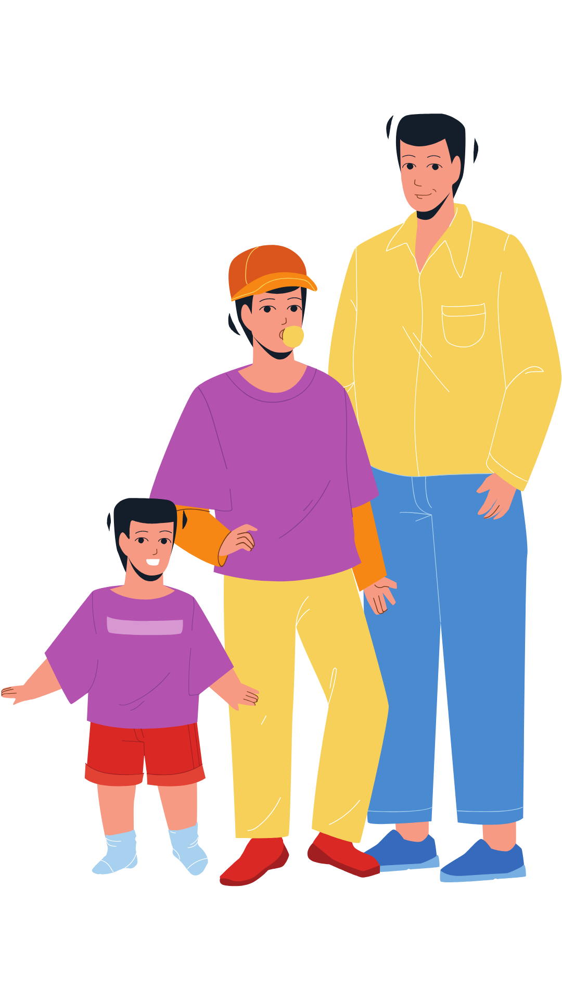
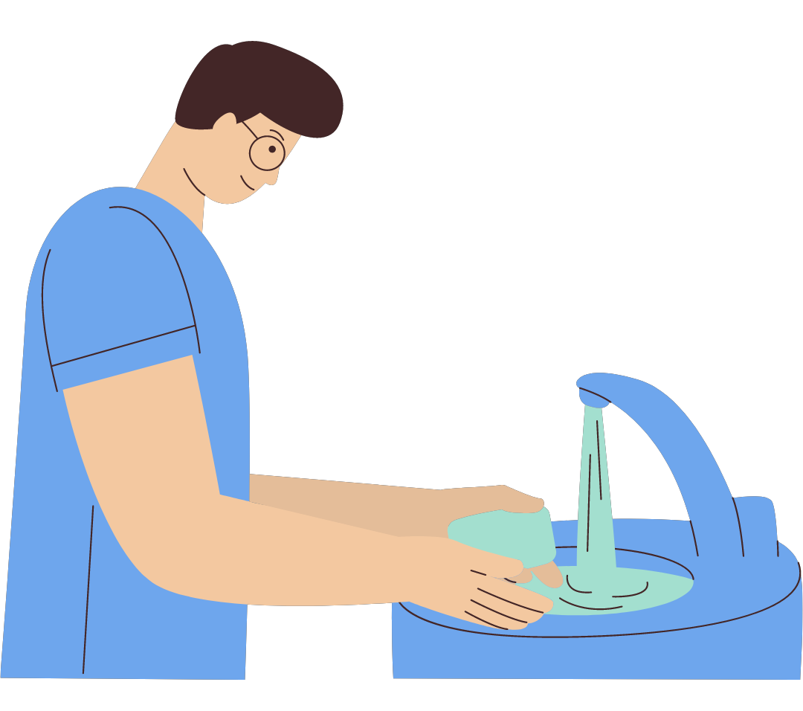
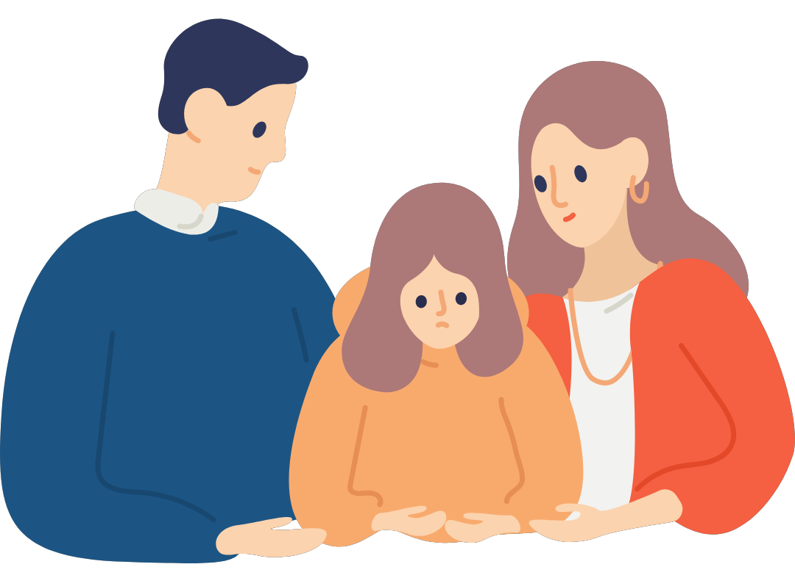
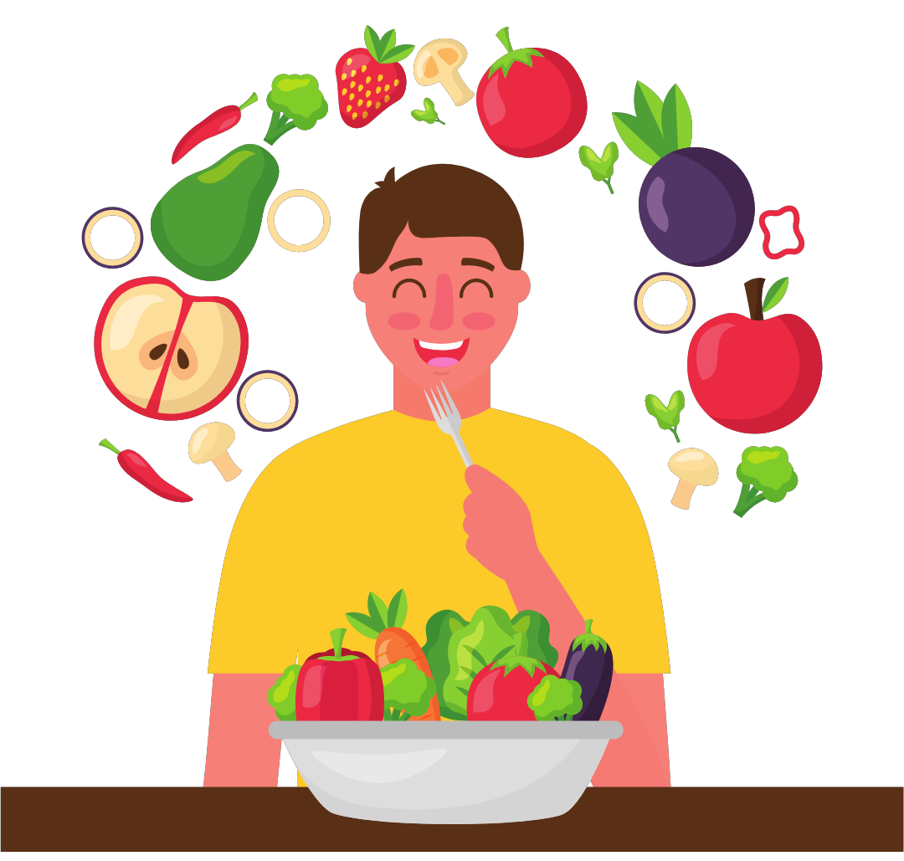
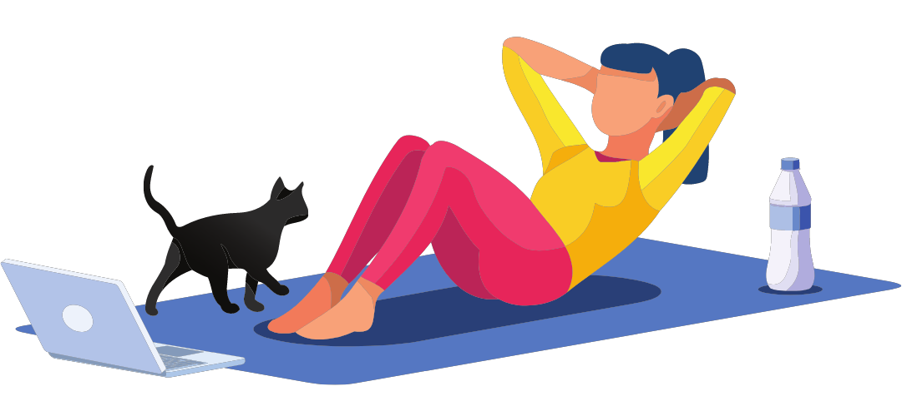
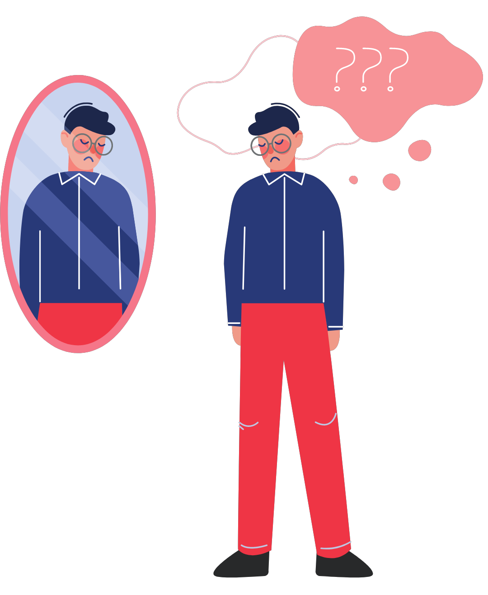

Persiapan
Pubertas
Memilih lingkungan pertemanan yang baik.
Memahami perubahan fisik yang akan terjadi.

Menjaga kebersihan diri.
Menjaga dan mengontrol perasaan.

Berdiskusi dengan orang tua mengenai persiapan pubertas.

Mengonsumsi makanan sehat.

Rajin olahraga.

Pada laki-laki ditandai dengan mimpi basah.
Pada perempuan ditandai dengan menstruasi.